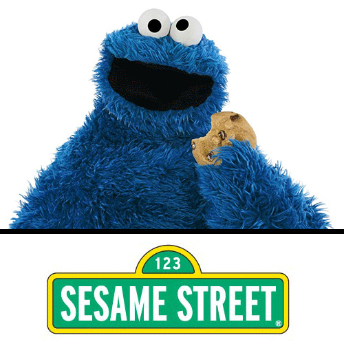

Are you a coookie lover? Then this website is for you! Vote on your favorite cookie type and share your thouhts with others, Enjoy!
Here is a video of the top ten cookies:
Out of the ten cookies, which is your favorite?
The Black and White Cookie
Shortbread Cookies
Gingerbread Cookies
Snickerdoodle Cookies
Sugar Cookies
White Chocolate Macadamia Nut Cookies
Oatmeal Cookies
Peanut Butter Cookies
Oreo Cookies
Chocolate Chip Cookies
Here is a survey where you can choose your favorite cookie out of the top ten from the video!
And this is a website to look up recipes for a new kind of cookie from the list!Here
is the link for the recipes
Here is a link that contains weird facts about chocolate chip cookies

This is Cookie Monster
From Sesame Street of course!
Cookie Monster is the mascot for this website!
Always keeping us on track!!
Always respect Cookie Monster!
He just likes to eat cookies
If you aren't farmiliar with any of the cookies here is a description for every cookie!
The Black and White Cookie
A soft, spongy cookie with white fondant on one half, and black fondant on the other.
The Shortbread Cookie
A biscuit like cookie, but sweeter.
The Gingerbread Cookie
A cookie with cinnamon, cloves, and ginger. usually used to make gingerbread men, woman, or houses.
The Snickerdoodle Cookie
A soft cookie topped with cinnamon and sugar.
The Sugar Cookie
A basic sweet cookie, usually made into different shapes for certain seasons and frosted colorfully.
The White Chocolate Macadamia Nut Cookies
A simple cookie stuffed with the great flavors of white chocolate, and macadamia nuts.
The Oatmeal Cookie
This is your basic cookie with a crunch, that crunch would be the oatmeal and sometimes raisins are add for extra flavor.
The Peanut Butter Cookie
A deilicious cookie with creamy peanut butter as one of the main ingredients making tha cookie even better.
The Oreo Cookie
The Oreo Cookie is a cookie that has two chocolate wafers on one side, and a delicious cream in the middle.
The Chocolate Chip Cookie
A cookie that is amazing and filled with chocolate here and there!